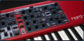
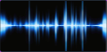

<!doctype html>
<html lang="pt-BR"><head><meta charset="utf-8"><title>Classic Player - Conceito D desktop</title>
<style>
@page{size:1700px 1160px;margin:0}
*{box-sizing:border-box}
html,body{margin:0;background:#0b0d10}
body{font-family:-apple-system,"Helvetica Neue",Arial,sans-serif;color:#e8ecf0;-webkit-print-color-adjust:exact;print-color-adjust:exact}
.pg{width:1700px;height:1160px;background:#0f1114;padding:34px 44px 34px;position:relative;page-break-after:always;overflow:hidden;display:flex;flex-direction:column}
.pg header h1{margin:0;font-size:26px}.pg header p{margin:4px 0 0;font-size:13px;color:#8b95a1}
.pgbody{flex:1;display:flex;gap:26px;margin-top:16px;min-height:0}
.main{display:flex;flex-direction:column;gap:14px;align-items:flex-start;min-width:0}
.side{flex:1;border-left:1px solid #2b323b;padding-left:20px;font-size:12px;line-height:1.55;color:#c3ccd4}
.side h3{margin:0 0 8px;font-size:11px;letter-spacing:.14em;color:#f5a524}.side ul{margin:0 0 14px;padding-left:16px}.side li{margin-bottom:6px}.side .old{color:#d98b8b}
footer{position:absolute;left:44px;right:44px;bottom:12px;font-size:10px;color:#667079;display:flex;justify-content:space-between}
.win{border:1px solid #2b323b;border-radius:8px;overflow:hidden;background:#0f1114;display:flex;flex-direction:column}
.top{height:36px;background:#171a1f;border-bottom:1px solid #2b323b;display:flex;align-items:center;gap:10px;padding:0 12px;flex:none}
.logo{font-weight:700;letter-spacing:.06em;color:#f5a524;font-size:12px;white-space:nowrap}
.menu{font-size:11px;color:#b6c0c9;display:flex;gap:14px;margin:0 6px}
.btn{height:24px;border:1px solid #2b323b;border-radius:4px;background:#1f242b;display:flex;align-items:center;justify-content:center;padding:0 9px;font-size:11px;font-weight:600;white-space:nowrap;color:#e8ecf0}
.btn.pri{background:#f5a524;border-color:#f5a524;color:#14100a}.btn.sm{height:20px;font-size:10px;padding:0 6px}.btn.dng{background:#3a1d22;border-color:#7a3340;color:#ffb3bd}.btn.ghost{background:transparent}
.sel{height:24px;border:1px solid #2b323b;border-radius:4px;background:#171a1f;display:flex;align-items:center;justify-content:space-between;padding:0 8px;font-size:11px;white-space:nowrap}.sel i{font-style:normal;color:#8b95a1;margin-left:6px}
.lbl{font-size:9px;font-weight:600;letter-spacing:.08em;color:#8b95a1;text-transform:uppercase;margin-bottom:3px}
.row{display:flex;gap:6px}
.seg{display:flex;background:#171a1f;border:1px solid #2b323b;border-radius:4px;padding:2px;gap:2px}.seg div{flex:1;height:18px;border-radius:3px;display:flex;align-items:center;justify-content:center;font-size:10px;font-weight:600;color:#8b95a1;padding:0 8px;white-space:nowrap}.seg .on{background:#2b323b;color:#e8ecf0}.seg.am .on{background:#f5a524;color:#14100a}
.tabs{display:flex;gap:2px;border-bottom:1px solid #2b323b;padding:0 12px;flex:none;align-items:flex-end;height:34px}.tabs div{padding:9px 14px;font-size:11px;font-weight:600;color:#8b95a1}.tabs .on{color:#f5a524;border-bottom:2px solid #f5a524}
.pn{border:1px solid #2b323b;border-radius:4px;background:#13161a}.pn>.h{height:20px;display:flex;align-items:center;padding:0 8px;font-size:9px;font-weight:700;letter-spacing:.1em;color:#8b95a1;border-bottom:1px solid #2b323b;background:#171a1f}.pn>.b{padding:8px;display:flex;flex-direction:column;gap:7px}
.kn{width:44px;height:44px;border-radius:50%;background:conic-gradient(from 225deg,#f5a524 var(--v),#2b323b 0);position:relative;margin:0 auto}
.kn:before{content:"";position:absolute;inset:4px;border-radius:50%;background:#1f242b}
.kn:after{content:"";position:absolute;left:50%;top:7px;width:2px;height:11px;margin-left:-1px;background:#e8ecf0;transform-origin:1px 15px;transform:rotate(var(--r))}
.kc{flex:1;text-align:center;min-width:0}.kc .lbl{text-align:center;white-space:nowrap}.kc .v{font-size:12px;font-weight:600;margin-top:4px}.kc .u{font-size:9px;color:#8b95a1}
.st{flex:1;min-width:0;border:1px solid #2b323b;border-radius:4px;background:#171a1f;display:flex;flex-direction:column;align-items:center;gap:6px;padding:6px 4px;position:relative}
.st.sl{border-color:#f5a524;background:#1d1a14}.st>i{position:absolute;left:0;right:0;top:0;height:3px;border-radius:3px 3px 0 0}
.st .nm{font-size:10px;font-weight:700;margin-top:4px;white-space:nowrap}.st .in{font-size:9px;color:#8b95a1;white-space:nowrap}
.fd{flex:1;width:100%;position:relative}.fd:before{content:"";position:absolute;left:50%;top:0;bottom:0;width:4px;margin-left:-2px;background:#0b0d10;border-radius:2px}.fd b{position:absolute;left:50%;margin-left:-12px;width:24px;height:11px;border-radius:2px;background:#cfd6db}
.mt{position:absolute;left:18%;top:0;bottom:0;width:4px;background:#0b0d10;border-radius:2px;overflow:hidden}.mt:after{content:"";position:absolute;left:0;right:0;bottom:0;height:var(--m);background:#4cc9f0}
.val{width:42px;height:18px;border:1px solid #2b323b;border-radius:3px;background:#0b0d10;font-size:10px;text-align:center;line-height:16px}
.fx{width:96px;border:1px solid #2b323b;border-radius:4px;background:#171a1f;padding:8px;text-align:center}.fx.on{border-color:#f5a524}.fx b{font-size:11px}.fx i{display:block;font-style:normal;font-size:9px;color:#8b95a1;margin-top:3px}
.arrow{align-self:center;color:#5b6672;font-size:16px}
.badge{position:absolute;font-size:8px;font-weight:700;background:#4cc9f0;color:#06141a;border-radius:3px;padding:1px 4px}
.slot{border:1px solid #2b323b;border-radius:4px;background:#171a1f;padding:12px;height:150px}.slot b{font-size:26px}.slot span{display:block;font-size:12px;margin-top:8px}.slot em{font-style:normal;font-size:10px;color:#8b95a1}
table{border-collapse:collapse;font-size:11.5px;width:100%}th,td{border:1px solid #2b323b;padding:7px 9px;text-align:left;vertical-align:top}th{background:#171a1f;color:#8b95a1;font-size:10px;letter-spacing:.08em}
.big{font-size:44px;font-weight:700;color:#f5a524;line-height:1}
.wf{border:1px dashed #5b6672;border-radius:4px;color:#8b95a1;font-size:10px;display:flex;align-items:center;justify-content:center}
</style><style>
.chord{background:#000;border:1px solid #2b323b;border-radius:4px;height:60px;display:flex;align-items:center;padding:0 16px;gap:14px;flex:1}
.chord b{font-size:40px;color:#ffd84a;line-height:1}.chord span{font-size:11px;color:#8b95a1}
.img{width:100%;height:46px;border-radius:3px;border:1px solid #2b323b;background:#1f242b;object-fit:cover;display:flex;align-items:center;justify-content:center;font-size:8px;color:#8b95a1}
.kb{position:relative;display:flex;height:var(--kh,90px);background:#0b0d10;padding:0 12px;flex:none}
.kb .w{flex:1;background:#eef1f4;border:1px solid #9aa4ad;border-top:none;position:relative;display:flex;align-items:flex-end;justify-content:center;font-size:8px;color:#5b6672;padding-bottom:2px}.kb .w.p{background:#2f7bff;color:#fff}
.kb .k{position:absolute;top:0;width:2.2%;height:60%;background:#14181c;border:1px solid #000;border-radius:0 0 2px 2px;z-index:2}.kb .k.p{background:#2f7bff}
.pc{height:44px;border-radius:5px;display:flex;align-items:center;justify-content:center;font-size:11px;font-weight:700;color:#06141a}
.pcard{border:1px solid #2b323b;border-radius:4px;background:#171a1f;padding:7px;display:flex;flex-direction:column;gap:6px}
.sld{height:5px;background:#2b323b;border-radius:3px;position:relative}.sld i{position:absolute;left:0;top:0;height:5px;background:#f5a524;border-radius:3px}
</style>
</head><body>
<script>
const sel=(l,t,f='1')=>`<div style="flex:${f};min-width:0">${l?`<div class=lbl>${l}</div>`:''}<div class=sel>${t}<i>⌄</i></div></div>`;
const btn=(t,c='',s='')=>`<div class="btn ${c}" style="${s}">${t}</div>`;
const kn=(l,v,f,u)=>`<div class=kc><div class=lbl>${l}</div><div class=kn style="--v:${f*75}%;--r:${-135+f*270}deg"></div><div class=v>${v}</div><div class=u>${u||'&nbsp;'}</div></div>`;
const row=(x,s='')=>`<div class=row style="${s}">${x}</div>`;
const seg=(items,on,c='',s='')=>`<div class="seg ${c}" style="${s}">${items.map((x,i)=>`<div class="${i==on?'on':''}">${x}</div>`).join('')}</div>`;
const pn=(t,body,s='')=>`<div class=pn style="${s}"><div class=h>${t}</div><div class=b>${body}</div></div>`;
const win=(body,w,h)=>`<div class=win style="width:${w}px;${h?'height:'+h+'px':''}">${body}</div>`;
const tabs=(items,on,right='')=>`<div class=tabs>${items.map((x,i)=>`<div class="${i==on?'on':''}">${x}</div>`).join('')}<div style="flex:1"></div>${right}</div>`;
const notes=(sec)=>`<div class=side>${sec.map(([h,items,cls])=>`<h3>${h}</h3><ul>${items.map(i=>`<li class="${cls||''}">${i}</li>`).join('')}</ul>`).join('')}</div>`;
const page=(n,t,s,body,side)=>`<section class=pg><header><h1>${t}</h1><p>${s}</p></header><div class=pgbody><div class=main>${body}</div>${side?notes(side):''}</div><footer><span>Classic Player · conceito D desktop, revisão 2</span><span>página ${n}</span></footer></section>`;
const T=['SOM','ENVELOPE','MIDI','EFEITOS','VELOCITY'];
const chordBox=(n,sub)=>`<div class=chord><b>${n}</b><span>${sub}</span></div>`;
const topbar=(mode,ch,chsub)=>`<div class=top style="height:28px"><div class=logo>CLASSIC PLAYER</div><div class=menu><span>Programa</span><span>Layer</span><span>Ver</span><span>Ferramentas</span><span>Ajuda</span></div><div style="flex:1"></div>${seg(['PALCO','MIXER','LIVE SET'],mode,'am','width:230px')}<div style="flex:1"></div><div style="font-size:10px;color:#8b95a1">CPU 3%</div><div style="width:60px;height:5px;background:#0b0d10;border-radius:3px"><div style="width:12%;height:5px;background:#4cc9f0;border-radius:3px"></div></div><div style="font-size:10px;color:#8b95a1">MASTER</div><div style="width:90px;height:5px;background:#2b323b;border-radius:3px"><div style="width:70%;height:5px;background:#f5a524;border-radius:3px"></div></div>${btn('EQ','sm')}${btn('LIM','sm')}</div>
<div style="display:flex;gap:10px;padding:8px 12px;background:#13161a;border-bottom:1px solid #2b323b;flex:none"><div style="width:190px;display:flex;flex-direction:column;justify-content:center"><div class=logo style="font-size:15px">CLASSIC PLAYER</div><div style="font-size:9px;color:#8b95a1">v3.0.3 · Wiliam Silva</div></div><div style="flex:1;display:flex;flex-direction:column;gap:6px">${chordBox(ch||'F',chsub||'F maior · F A C')}<div class=row>${sel('','Culto 1','3')}${btn('Salvar','ghost')}${btn('Novo','ghost')}${btn('Importar','ghost')}${btn('Exportar','ghost')}${btn('Excluir','ghost')}</div></div><div style="display:flex;flex-direction:column;gap:6px;width:130px">${btn('COR DO ACORDE','sm','width:100%')}${btn('COR DAS TECLAS','sm','width:100%')}${btn('+ CAMADA','pri','width:100%')}</div></div>`;
const foot=(kb,learn)=>`<div style="height:34px;border-top:1px solid #2b323b;background:#171a1f;display:flex;align-items:center;gap:8px;padding:0 12px;flex:none">${btn('● GRAVAR WAV+MIDI','')}${btn(kb?'OCULTAR TECLADO':'MOSTRAR TECLADO','ghost')}${btn('ÁUDIO / MIDI','ghost')}<div style="width:140px">${sel('','Tema: Padrão')}</div>${btn('ATUALIZAÇÕES','ghost')}${btn('BACKUP','ghost')}<div style="flex:1"></div>${btn(learn?'MIDI LEARN: LIGADO':'MIDI LEARN','',learn?'background:#4cc9f0;color:#06141a;border-color:#4cc9f0':'')}${btn('PANIC','dng')}</div>`;
const keyboard=(h,names)=>{const seq=['A','B','C','D','E','F','G'];let w='',k='';const N=36,pressed=['F','A','C','F'];const pidx=[19,21,23,26];for(let i=0;i<N;i++){const nm=seq[i%7];w+=`<div class="w ${pidx.includes(i)?'p':''}">${names?nm:''}</div>`;if(['A','C','D','F','G'].includes(nm)&&i<N-1){k+=`<div class="k ${pidx.includes(i)&&false?'p':''}" style="left:calc(12px + (100% - 24px) * ${(i+1)/N} - 1.1%)"></div>`}}return `<div class=kb style="--kh:${h}px">${w}${k}</div>`};
const strip=(i,tp,inst,c,img,m,sl,wide)=>`<div class="st ${sl?'sl':''}" style="${wide?'flex:'+wide:''}"><i style="background:${c}"></i><div class=in style="margin-top:3px">${i} · ${tp}</div>${img}<div class=nm>${inst}</div><div style="display:flex;gap:3px"><div class="btn sm" style="padding:0 6px">M</div><div class="btn sm" style="padding:0 6px">S</div></div><div class=fd><div class=mt style="--m:${m*100}%"></div><b style="top:30%"></b></div><div class=val>80</div></div>`;
const IM={nord:'',wave:'',x:t=>`<div class=img>${t}</div>`};
const miniPads=(n,cols)=>`<div style="display:grid;grid-template-columns:repeat(${cols},1fr);gap:4px;width:100%;flex:none">${['#3b8bff','#a65cff','#ff6a80','#ff9b52','#3fd18a','#f2c94c','#3ccfdd','#ee6aa7','#8f9bff','#ff8a6b','#8bdc66','#b18aee'].slice(0,n).map(c=>`<div style="height:26px;border-radius:4px;background:${c}"></div>`).join('')}</div>`;
const mixer=(sl,h)=>`<div style="display:flex;gap:6px;padding:8px 10px;height:${h}px;background:#0f1114;border-top:1px solid #2b323b;flex:1;min-height:0">${strip(1,'NPNO','Royal Grand 3D Sml 6.1','#f5a524',IM.nord,.6,sl==0)}${strip(2,'NSMP','Merish','#4cc9f0',IM.wave,.05,sl==1)}${strip(3,'NSMP','CK Worship Pad 1','#4cc9f0',IM.wave,.05,sl==2)}${strip(4,'NPNO','Ballad EP2 Sml 5.2','#f5a524',IM.nord,.35,sl==3)}${strip(5,'HAMMOND','Jimmy Gospel','#ff8a5c',IM.x('imagem atual do órgão'),.5,sl==4)}${strip(6,'MOOG','Classic Keys Analog','#5ee0c0',IM.x('imagem atual do Moog'),.3,sl==5)}${strip(7,'DRUM PADS','8 pads','#ff6f91',miniPads(8,4),0,sl==6,1.7)}${strip(8,'PAD CONTÍNUO','12 notas','#8f9bff',miniPads(12,6),0,sl==7,1.7)}</div>`;
const P=[];

/* 1 */
P.push(`<section class=pg style="justify-content:center"><div style="font-size:12px;letter-spacing:.3em;color:#f5a524">CLASSIC PLAYER · CONCEITO D DESKTOP · REVISÃO 2</div><h1 style="font-size:44px;margin:10px 0 6px">Imagens, pads, teclado e acordes</h1><div style="font-size:17px;color:#8b95a1;margin-bottom:26px;max-width:1000px">Esta revisão corrige o que faltava no D de desktop: as imagens dos instrumentos voltam ao mixer, os dois motores de pads ganham telas próprias, e o display de acordes e o teclado virtual têm lugar fixo na janela.</div>
<table style="width:1250px"><tr><th>Você pediu</th><th>O que mudou nesta revisão</th><th>Pág.</th></tr>
<tr><td>Manter as imagens das layers no mixer</td><td>Cada faixa tem a imagem do instrumento no topo (usei as imagens reais do NPNO e do NSMP, recortadas do seu print), o nome do instrumento e o motor. Os pads mostram a grade em miniatura.</td><td>2</td></tr>
<tr><td>Drum Pads</td><td>Ao selecionar a faixa, o inspetor mostra os oito pads com volume, carregar e nome do arquivo de cada um.</td><td>3</td></tr>
<tr><td>Pad Contínuo</td><td>Doze pads por nota, PARAR, crossfade, cutoff e acesso a EQ e filtros em aba própria.</td><td>4</td></tr>
<tr><td>Teclado virtual e nomes de acordes</td><td>O display preto de acordes volta ao topo, com o nome grande em amarelo; o teclado fica acima do rodapé, com as teclas tocadas em azul, e abre e fecha por MOSTRAR/OCULTAR TECLADO.</td><td>2 e 5</td></tr>
<tr><td>Todo o resto</td><td>Efeitos, envelope, velocity, Hammond, Moog e Live Set continuam como no PDF anterior; só o topo, o mixer e o rodapé mudam.</td><td>6</td></tr></table>
<div style="margin-top:20px;font-size:12px;color:#8b95a1">Mockups em HTML; o app real não foi alterado.</div></section>`);

/* 2 principal */
const col3=`<div style="display:flex;gap:10px;padding:10px;flex:none">
${pn('FONTE E TIMBRE',row(sel('Categoria','Piano acústico','.8')+sel('Biblioteca NPNO','Royal Grand 3D Sml 6.1','1.2'))+row(btn('Importar NPNO','','flex:1')+btn('Importar bundle','','flex:1')+btn('Excluir','dng'))+seg(['OFF','SOFT','MID','BRIGHT'],0,'am')+row(sel('Dyn comp','Off')+sel('Cauda','Original')),'width:400px')}
${pn('MIDI',row(sel('Canal','MIDI omni')+sel('Modo','Poli')+sel('Sustain','Sustain on'))+row(sel('Entrada MIDI','Todos os controladores'))+row(sel('Oitava','0 oit')+sel('Polifonia','128 vozes')+sel('Vel. mín.','1','.7')+sel('Vel. máx.','127','.7'))+row(btn('GRAVE','','flex:1')+btn('AGUDO','','flex:1')+btn('Reset','ghost')+seg(['PITCH BEND: ON'],0,'am','flex:1')),'width:440px')}
${pn('CONTROLES DA CAMADA',`<div style="display:flex;flex-wrap:wrap;row-gap:6px">${[['Volume',80,.6,'%'],['Cutoff',100,1,'%'],['Reverb',0,0,'%'],['Comp',0,0,'%'],['EQ low','0,0',.5,'dB'],['EQ mid','0,0',.5,'dB'],['EQ high','0,0',.5,'dB'],['Ganho','0,0',.5,'dB']].map(a=>`<div style="width:25%">${kn(...a)}</div>`).join('')}</div>`,'flex:1')}
</div>`;
const hdr=(t,sub,c)=>`<div style="padding:7px 14px;display:flex;align-items:center;gap:10px;border-bottom:1px solid #2b323b;flex:none"><div style="width:8px;height:22px;background:${c};border-radius:2px"></div><b style="font-size:13px">${t}</b><span style="font-size:11px;color:#8b95a1">${sub}</span><div style="flex:1"></div>${btn('Exportar preset','ghost')}${btn('Importar preset','ghost')}${btn('Reset layer','ghost')}</div>`;
P.push(page(2,'Janela principal','Display de acordes no topo, inspetor, mixer com imagens, teclado virtual e rodapé.',
win(topbar(0)+hdr('Layer 1 · Piano Nord (NPNO)','Royal Grand 3D Sml 6.1 · 128 vozes · canal omni','#f5a524')+tabs(T,0)+col3+mixer(0,300)+keyboard(86,true)+foot(true,false),1300,1060),
[['O QUE VOLTOU',['Imagem do instrumento em cada faixa do mixer, com o nome real da amostra.','Display preto de acordes no topo, nome em amarelo grande.','Teclado virtual com nome das notas e teclas tocadas em azul.','Botões COR ACORDE e COR TECLAS continuam, ao lado do display.'],''],['O QUE MUDA',['EDITAR e RESET por faixa saem; clicar na faixa seleciona.','LEARN por controle vira o modo global MIDI LEARN.'],'old']]));

/* 3 drum pads */
const padColors=['#3b8bff','#a65cff','#ff6a80','#ff9b52','#3fd18a','#f2c94c','#3ccfdd','#ee6aa7'];
const files=['kick.wav','snare.wav','—','hat.wav','—','clap.wav','—','—'];
P.push(page(3,'Drum Pads selecionado','O inspetor mostra os oito pads; a faixa 7 do mixer fica destacada.',
win(topbar(0,'—','nenhuma nota tocada')+hdr('Layer 7 · Drum Pads','8 pads · canal omni','#ff6f91')+tabs(['PADS','MIDI','EFEITOS'],0)+`<div style="padding:10px;display:flex;gap:10px;flex:none"><div style="display:grid;grid-template-columns:repeat(4,1fr);gap:8px;flex:1">${padColors.map((c,i)=>`<div class=pcard><div class=pc style="background:${c}">PAD ${i+1}</div><div style="font-size:10px;color:#8b95a1">${files[i]}</div><div style="display:flex;align-items:center;gap:6px"><div class=sld style="flex:1"><i style="width:100%"></i></div><span style="font-size:10px">100%</span></div>${row(btn('Carregar','sm','flex:1')+btn('Limpar','sm ghost','flex:1'))}</div>`).join('')}</div>${pn('GERAL',`<div style="display:flex">${kn('Volume',80,.6,'%')}${kn('Mute','—',0,'')}</div>${btn('Carregar kit...','', 'width:100%')}${btn('Parar todos','ghost','width:100%')}`,'width:230px')}</div>`+mixer(6,300)+keyboard(86,true)+foot(true,false),1300,1060),
[['O QUE MUDA',['Cada pad: botão colorido, arquivo carregado, volume e Carregar/Limpar.','LEARN por pad e LEARN VOLUME/MUTE somem; usam o MIDI LEARN global (clicar no pad ou no volume).','"LOAD" vira "Carregar".'],'old'],['IGUAL',['As cores dos oito pads e o comportamento de tocar os pads pelo mouse.']]]));

/* 4 pad continuo */
const names=['C','C#','D','D#','E','F','F#','G','G#','A','A#','B'];const pcol=['#3b8bff','#a65cff','#ff6a80','#ff9b52','#3fd18a','#f2c94c','#3ccfdd','#ee6aa7','#8f9bff','#ff8a6b','#8bdc66','#b18aee'];
P.push(page(4,'Pad Contínuo selecionado','Doze notas, crossfade e cutoff na mesma tela; EQ e filtros em aba própria.',
win(topbar(0,'F','F maior · F A C')+hdr('Layer 8 · Pad Contínuo','12 notas · crossfade 1,0 s','#8f9bff')+tabs(['PADS','EQ E FILTROS','MIDI'],0)+`<div style="padding:10px;display:flex;gap:10px;flex:none"><div style="display:grid;grid-template-columns:repeat(6,1fr);gap:8px;flex:1">${names.map((n,i)=>`<div class=pcard style="${n=='F'?'border-color:#f5a524':''}"><div class=pc style="background:${pcol[i]}">${n}</div><div style="font-size:10px;color:#8b95a1">${i%3==0?'worship_'+n+'.wav':'—'}</div>${row(btn('Carregar','sm','flex:1')+btn('Limpar','sm ghost','flex:1'))}</div>`).join('')}</div>${pn('CONTROLES',`<div class=lbl>Crossfade</div><div style="display:flex;align-items:center;gap:6px"><div class=sld style="flex:1"><i style="width:20%"></i></div><span style="font-size:10px">1,00 s</span></div><div class=lbl>Cutoff</div><div style="display:flex;align-items:center;gap:6px"><div class=sld style="flex:1"><i style="width:100%"></i></div><span style="font-size:10px">100%</span></div>${btn('PARAR','','width:100%')}${btn('Editar EQ e filtros','ghost','width:100%')}`,'width:260px')}</div>`+mixer(7,300)+keyboard(86,true)+foot(true,false),1300,1060),
[['O QUE MUDA',['Crossfade e cutoff como deslizadores com rótulo e valor.','PARAR e EDITAR EQ / FILTROS no mesmo painel.','LEARN STOP, LEARN CUTOFF, LEARN VOLUME e MUTE saem: ficam no MIDI LEARN global.','O pad da nota que está tocando (F) ganha borda âmbar: destaque proposto.'],'old']]));

/* 5 teclado e acordes */
const chip=(t,on)=>`<div class=btn style="${on?'background:#f5a524;color:#14100a;border-color:#f5a524':''}">${t}</div>`;
P.push(page(5,'Teclado virtual e nomes de acordes','Função mantida e com lugar fixo. Itens marcados como proposta ainda não existem no app.',
`<div style="display:flex;gap:14px;flex-wrap:wrap">${[['F','F maior · F A C'],['Am7','Lá menor com sétima · A C E G'],['C/E','Dó maior, baixo em Mi (inversão)'],['—','nenhuma nota tocada']].map(a=>`<div style="width:300px"><div class=lbl>Display do acorde</div>${chordBox(a[0],a[1])}</div>`).join('')}</div>
<div style="width:1250px"><div class=lbl>Teclado: tamanho normal (86 px), nomes das notas visíveis</div><div class=win style="width:1250px">${keyboard(86,true)}</div></div>
<div style="display:flex;gap:14px;width:1250px"><div style="flex:1"><div class=lbl>Compacto (56 px), sem nomes</div><div class=win>${keyboard(56,false)}</div></div><div style="flex:1"><div class=lbl>Grande (130 px), com nomes</div><div class=win>${keyboard(130,true)}</div></div></div>
${pn('AJUSTES DO DISPLAY E DO TECLADO (popover do botão ao lado do display)',row(`<div style="width:300px"><div class=lbl>Cor do acorde</div>${row('<div style="width:28px;height:24px;background:#ffd84a;border-radius:4px"></div>'+sel('','#FFD84A'))}</div><div style="width:300px"><div class=lbl>Cor das teclas tocadas</div>${row('<div style="width:28px;height:24px;background:#2f7bff;border-radius:4px"></div>'+sel('','#2F7BFF'))}</div><div style="width:260px"><div class=lbl>Notação (proposta)</div>${seg(['C D E','Dó Ré Mi'],0,'am')}</div><div style="width:260px"><div class=lbl>Tamanho do teclado (proposta)</div>${seg(['COMPACTO','NORMAL','GRANDE'],1,'am')}</div>`)+row(chip('Mostrar nomes das notas (proposta)',1)+chip('Mostrar inversão /baixo (proposta)',1)+chip('Atalho: T mostra/oculta o teclado (proposta)',0)),'width:1250px')}`,
[['JÁ EXISTE HOJE',['Display de acorde no topo.','Botões COR ACORDE e COR TECLAS.','Teclado virtual com nomes de notas e teclas tocadas.','Botão MOSTRAR/OCULTAR TECLADO.'],''],['PROPOSTA NOVA',['Notação em Dó Ré Mi, tamanhos de teclado e atalho T.','Mostrar as notas do acorde no display.','Os tamanhos e a notação precisam ser conferidos com o detector de acordes antes de implementar.'],'old']]));

/* 6 resto */
P.push(page(6,'O que continua como no PDF anterior','Só o topo, o mixer e o rodapé mudam nas outras telas.',
`<table style="width:1250px"><tr><th>Tela</th><th>Situação</th></tr>
<tr><td>Hammond e Moog</td><td>Inspetor com aba SOM própria do motor, como no PDF anterior; o mixer ganha as imagens e o nome real do instrumento.</td></tr>
<tr><td>Efeitos</td><td>Cadeia de blocos (EQ, compressor, reverb, tremolo, delay, flanger, chorus) na aba Efeitos.</td></tr>
<tr><td>Envelope e Velocity</td><td>Lado a lado, com o indicador do último toque e o piso de timbre.</td></tr>
<tr><td>Live Set</td><td>Modo no seletor do topo; slots grandes só nesse modo. O display de acordes e o teclado também aparecem nele.</td></tr>
<tr><td>EQ master e Limiter</td><td>Abrem como painéis flutuantes pelos botões EQ e LIM do topo.</td></tr>
<tr><td>MIDI Learn</td><td>Modo global no rodapé; controles mapeados mostram etiqueta de CC.</td></tr></table>
<div style="font-size:12px;color:#c3ccd4;line-height:1.6;max-width:1250px">Observação: o display de acordes e o teclado ocupam altura. Em janelas pequenas o teclado pode ficar oculto e o display encolhe. Isso precisa ser testado no JUCE.</div>`,
[['ARQUIVOS',['Os PDFs anteriores estão guardados em docs/ui-concepts do repositório.']]]));

/* 7 decisoes */
P.push(page(7,'Decisões','Para eu começar a implementar.',
`<table style="width:1250px"><tr><th>Etapa</th><th>O que entra</th><th>Esforço</th><th>Risco</th></tr>
<tr><td>1</td><td>Tema âmbar/grafite e tamanhos compactos no ClassicLookAndFeel</td><td>Pequeno</td><td>Baixo</td></tr>
<tr><td>2</td><td>Topo (menus, display de acordes, programa), mixer com imagens, teclado e rodapé</td><td>Médio</td><td>Médio</td></tr>
<tr><td>3</td><td>Inspetor com abas e três colunas (NPNO e NSMP primeiro)</td><td>Grande</td><td>Alto</td></tr>
<tr><td>4</td><td>Telas de Drum Pads e Pad Contínuo no inspetor</td><td>Médio</td><td>Médio</td></tr>
<tr><td>5</td><td>Demais motores e aba Efeitos em cadeia</td><td>Grande</td><td>Médio</td></tr>
<tr><td>6</td><td>MIDI Learn global</td><td>Médio</td><td>Alto: muda a lógica de mapeamento</td></tr></table>
<div style="font-size:13px;line-height:1.8;color:#c3ccd4"><b>Perguntas:</b><br>1. Aprovar esta revisão como direção?<br>2. Tema âmbar/grafite como padrão, mantendo os outros temas?<br>3. Topa o MIDI Learn global? (se não, os botões LEARN ficam, só menores)<br>4. Começo pela etapa 1 já na branch?</div>`,null));

document.write(P.join(''));
</script></body></html>
